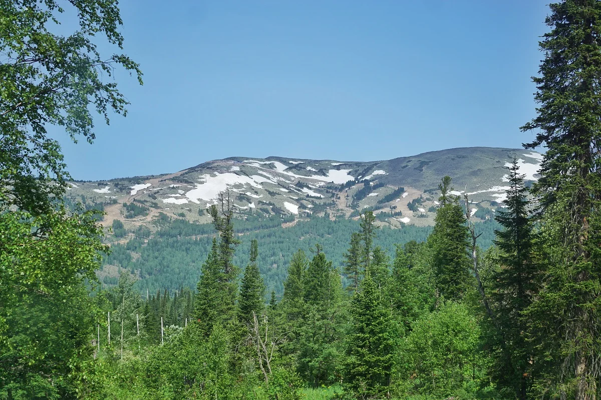

Ski Resort Sheregesh
Шерегеш - посёлок в Таштагольском районе Кемеровской области

About
Гора Зеленая - гора с горнолыжным курортом, склонами разной сложности, местами для катания на снегоходах, подъемниками и летними тропами.
Шерегеш — посёлок в Таштагольском районе Кемеровской области — Кузбасса у подножия горы Зелёная. Известен своим горнолыжным курортом. Ведущее промышленное предприятие — Шерегешский рудник — поставляет железную руду на металлургические комбинаты Новокузнецка.
Mount Green is a mountain with a ski resort, slopes of varying difficulty, places for snowmobiling, ski lifts and summer trails.
Sheregesh is a village in the Tashtagol district of the Kemerovo region - Kuzbass at the foot of Mount Zelenaya. It is famous for its ski resort. The leading industrial enterprise - Sheregesh mine - supplies iron ore to the metallurgical plants of Novokuznetsk.
History

Как появился Шерегеш? В 1931 году приехали русские геологи. И с 1931 года началась разведка. Когда геологи стали называть поселок фамилией первооткрывателей, то изменили нашу фамилию. Фамилия была Шарагашев, а геологи, по их согласию, назвали поселок – Шерегеш, а фамилию – Шерегешев, так как лучше звучит по-русски».
How did Sheregesh appear? In 1931, Russian geologists arrived. And exploration began in 1931. When geologists began to call the settlement by the name of the discoverers, they changed our last name. The last name was Sharagashev, and the geologists, by their agreement, named the settlement Sheregesh, and the last name Sheregeshev, since it sounds better in Russian"
Interesting facts

- За зимний сезон 2022—2023 гг. в Шерегеше побывало около 2,3 млн россиян.
- 11 марта 2017 года в Шерегеше в секторе Е прошел зимний этап всероссийского забега с препятствиями «Гонка Героев».
- Шерегеш занимает 4-е место по популярности отдыха на горнолыжных курортах в праздничные выходные на День защитника Отечества.
- Территория курорта входит СЭЗ «Горная Шория»
- During the winter season of 2022-2023, about 2.3 million Russians visited Sheregesh.
- On March 11, 2017, the winter stage of the All-Russian "Race of Heroes" with attractions was held in Sheregesh.
- Sheregesh ranks 4th in popularity of vacations at resorts on the holiday weekend on Defender of the Fatherland Day.
- The territory of the resort is part of the "Gornaya Shoria" SEZ